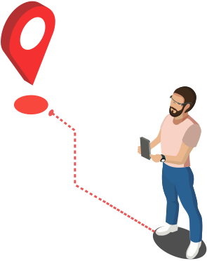
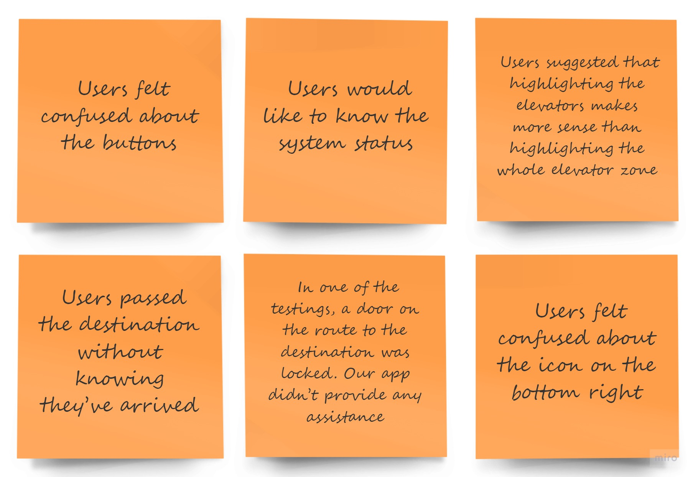
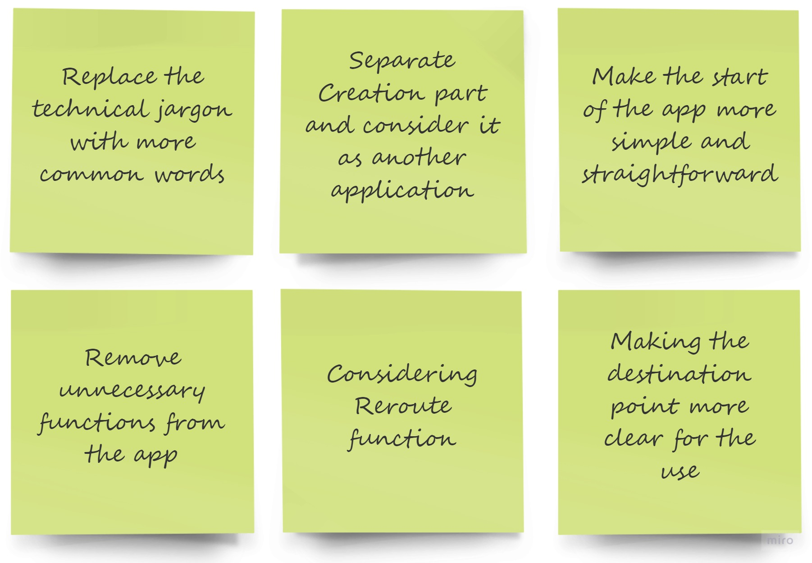
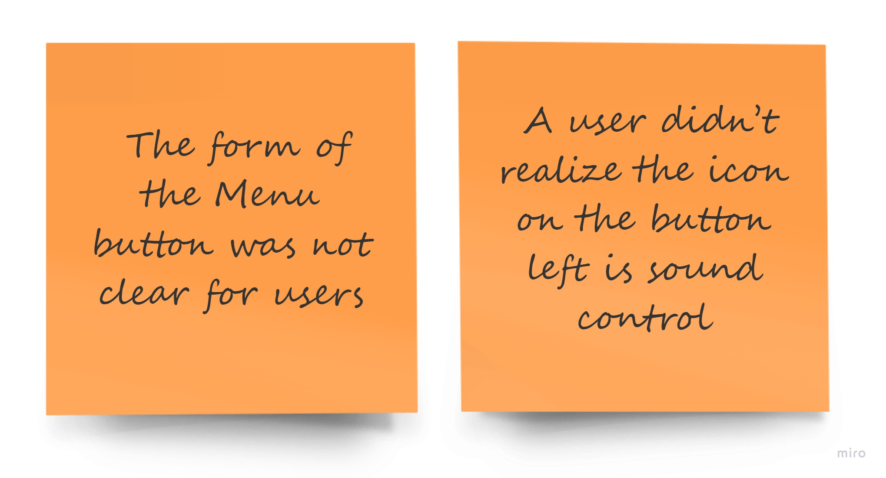
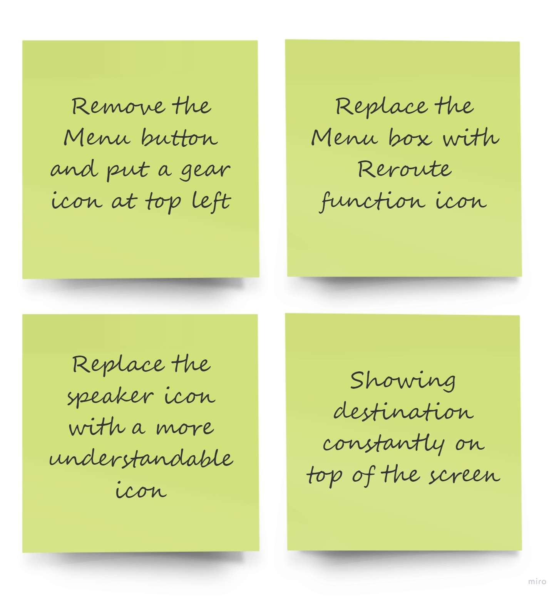

LOCATIFY

PURPOSE
Proposing a solution for indoor navigation
MY ROLES
Ideation, Prototype Design, Usability Test
COURSE
Interaction Design
MY TAKE OVER
Understanding the challenges of using AR applications, and the ways that can make them easier to be used by users in their routine life
FUTURE WORK
Creating AR content by non-technical users is a challenge that we couldn't find a simple way for
TIME
September 2019-December 2019
We all had this experience of being in a new place and felt that we needed someone to help us
find out where to go or what to do next. Our initial concept came from our
personal experiences. As a student at UT,
we visit new buildings and new places very often, but it’s also common
that we are unable to find the room we're looking for inside a building.
In this project we propose a mobile application prototype that aims at making the process of finding a room in a building
easier. We had an iterative approach between design and usability testing to get to the final result.
Initial Concept
Our initial concept was to combine Augmented Reality technology with messaging.
By putting smart guidelines in the space as a message, we can help people to get
familiar with a new place faster than ever.
In order to dive deeper into our concept of AR plus messaging,
we conducted a competitive analysis to understand the current usage of AR.
Competitive Analysis
In order to dive deeper into our concept of AR messaging, we conducted a competitive analysis to understand the current applications using AR. We could identify some
categories that each of the existing apps or platforms can fall into. Most of the AR apps in the market are used for entertaining purposes and the rest with other purposes
couldn't find a good standing point in the market so far.
User Research
After identifying the problem and brainstorming for the possible solutions and going deeper into the use case of AR technology, it was time to put more
focus on users and the experience that we wanted to provide for them. This project had several user research steps that started with conducting a survey for
getting insights and evaluation of our target community and their needs and preferences.
Idea ValidationSurvey Results
After deciding about our user community we brainstormed some of the possible problems that students have and we might be able to help them with our App. We designed a survey questionnaire with three sections.
In the first section, we asked students to rate the difficulty level of several scenarios.
In the second section, we asked about the students’ preferred types of guiding material.
In the Third section, asked students about their preferred way of obtaining information.
We distributed the link to our questionnaire at several social networks and about 46 responses were gathered. The following charts show the results of this survey.
User ResearchInterview
After seeing the survey results, We already decided to focus on the main problem, i.e. finding a room at the campus. So we
interviewed four students from UT Austin to learn more about their experience in finding places on campus.
During the interview, we asked open-ended questions to elicit interviewees’ stories, thoughts, and actions.
The following questions were some that we asked:
☑ Do you remember the first time you visited UT campus? Where did you visit? How did you find the place?
☑ Have you experienced any difficulty in finding a room on campus? If yes, how did you tackle this difficulty? If no, how do you do that?
We interviewed 4 students and gathered and made the Affinity Diagram and Journey Map as an starting point for our application
design.
User Journey Map
Based on the insights we got from the affinity diagram, we created a journey map.
The map shows that students have many negative experiences when they’re searching to find a room, which aligns with our survey’s results.
We identified users’ pain points and our product’s opportunities in the entire journey.
The indoor navigation application in the first iteration of the design cycle had two parts. The first part, “Find AR content” was for users to find information about a place. The second part, “Create AR content” was for users to create AR content in the space. Once the user taps the first button, the app will ask what the user is looking for, and then users can type in the room code.
Path Vs. Target
One of the biggest differences between indoor and outdoor navigation is that all the objects are closer to the user when they are inside of a building.
Hence, our team believes that the best solution for interior navigation is highlighting targets for users instead of showing a path on the ground.
The app highlights objects that users need to pass by with instructions in a box.
As another feature, when users arrive at the destination, they can end the navigation by tapping the Done button. If users get lost and want to go back to the previous screen,
the button on the bottom right allows the user to select and go back to the previous stage.
Content Creation
The following screens show our ideas for the process of creating AR content. The creation starts from the recording button in the middle of the screen, and the whole
recording could be ended with the red button on the bottom left. The users can use the toolbox to add text, voice, picture, and shapes to space.
User ResearchLo-Fi usability test
For the lo-fi prototype, we conducted in-person usability tests with five users and found out several usability issues including:

Decisions
based on the findings at this stage, we made the following decisions:

Based on the feedback and findings we got from the lo-fi testing, we iterated the prototype into medium-fidelity. The first change is that a voice command feature is added to the application. So the user can select if they want to talk to the system or use text input. If user chooses voice assistance, it will then ask users the room number and then confirms the number by repeating it. If the user chooses to use text, they can simply put the room code into the box, and the system can identify the building code and room number.
Features and Functions
We moved the text bar from the bottom to the upper, changed the rectangle into gradient color to highlight targets.
When the user’s phone is not toward a target, a blue arrow notifies the user to change the direction. If the highlighted target is a door,
the text box reminds the user to try Reroute option from menu. We also added a big icon in front of the destination.
User ResearchMid-Fi usability test
For the mid-fi prototype, we also conducted in-person usability tests with five users and found out several usability issues including the followings.

Decisions
based on the findings at this stage, we made the following decisions:

Based on the feedback and findings we got from the medium fidelity testing, we iterated the prototype and added and/or removed some features. Some of the changes are depicted at the following pictures. Also we prepared a video representation of the final application in a real life scenario.
Settings
Made the overall design and the position of the setting icons more consistent.
Reroute
Replaced the menu box with Reroute function icon and put the menu features under the Gear icon at top left.
Speaker icon updated as well.
Menu Button
Pulled out the most important function, Reroute, from the menu box. We also changed the icon of the sound and added text under the icons.
Destination
Made the user’s destination room number visible during the navigation and removed some features at destination.
Acknowledgement
This is a teamwork project for the course "Interaction Design" at the School of Information at University of
Texas at Austin. This project was worked under the supervision of A. Flemin Seay, Director of User Experience Engineering & Research at Dell.
Team members were Hunran Peng, Sherry Wu, and Vincent Chang. It was presented for 3 of UX experts at Dell and they endored our efforts and provided us with constructive feedbacks.
"You guys started the semseter very strong and seemed to keep your momentum throughout. What you have put together is a very solid set of design artifacts and deliverables that tell a very clear story about your process."
A. Fleming Seay
{kind=link}
{kind=link}
{kind=link}
{kind=link}
{kind=link}
{kind=link}
{kind=link}
{kind=link}
{kind=link}
{kind=link}
{kind=link}
{kind=link}
{kind=link}
{kind=link}